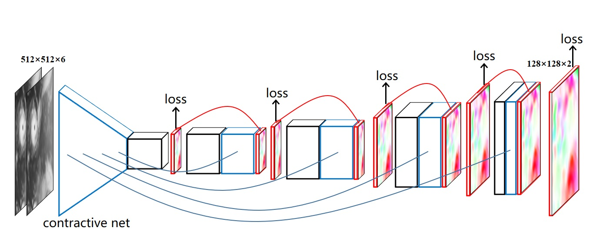
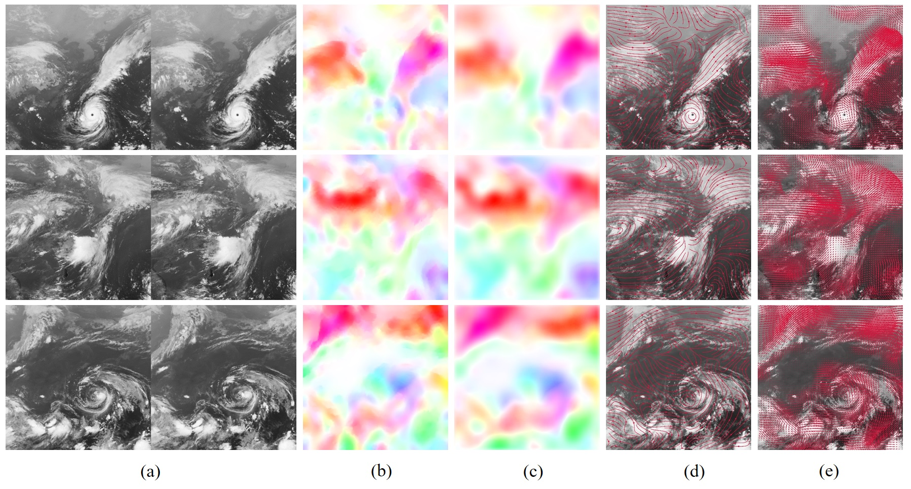

Generating the Cloud Motion Winds Field from Satellite Cloud Imagery Using Deep Learning Approach
Chongqing University of Technology

Abstract
Cloud motion winds (CMW) are routinely derived by tracking features in sequential geostationary satellite infrared cloud imagery. In this paper, we explore the cloud motion winds algorithm based on data-driven deep learning approach, and different from conventional hand-craft feature tracking and correlation matching algorithms, we use deep learning model to automatically learn the motion feature representations and directly output the field of cloud motion winds. In addition, we propose a novel large-scale cloud motion winds dataset (CMWD) for training deep learning models. We also try to use a single cloud imagery to predict the cloud motion winds field in a fixed region, which is impossible to achieve using traditional algorithms. The experimental results demonstrate that our algorithm can predict the cloud motion winds field efficiently, and even with a single cloud imagery as input.
Examples

Downloads
- Full Paper
- CMWD Dataset(TianYiCloud; 2.2GB)
- CMWD Dataset(BaiduCloud; Extraction code: np6o)
- CMWNet Pretrained Model(TianYiCloud; 578MB)
- CMWNet Pretrained Model(BaiduCloud; Extraction code: wqk0)
- Source Code(Github)
- Source Code(Githee)
- Demo for Presentation(TianYiCloud; 7MB)
- Demo for Presentation(BaiduCloud; Extraction code: 11ug)
- (New!) Presention: (Video , Subtitle)
- (New!) Presentation Slides
Citation
@inproceedings{
title={Generating the Cloud Motion Winds Field from Satellite Cloud Imagery Using Deep Learning Approach},
author={Tan, Chao},
booktitle={2021 IEEE International Geoscience and Remote Sensing Symposium (IGARSS)},
year={2021},
organization={IEEE}
}